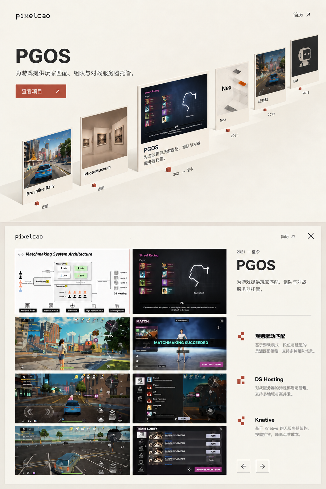
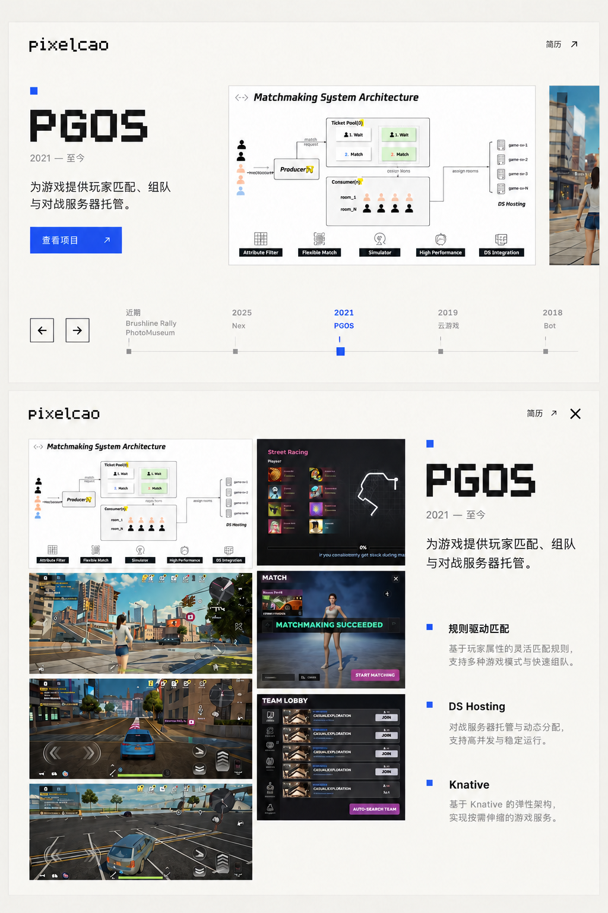
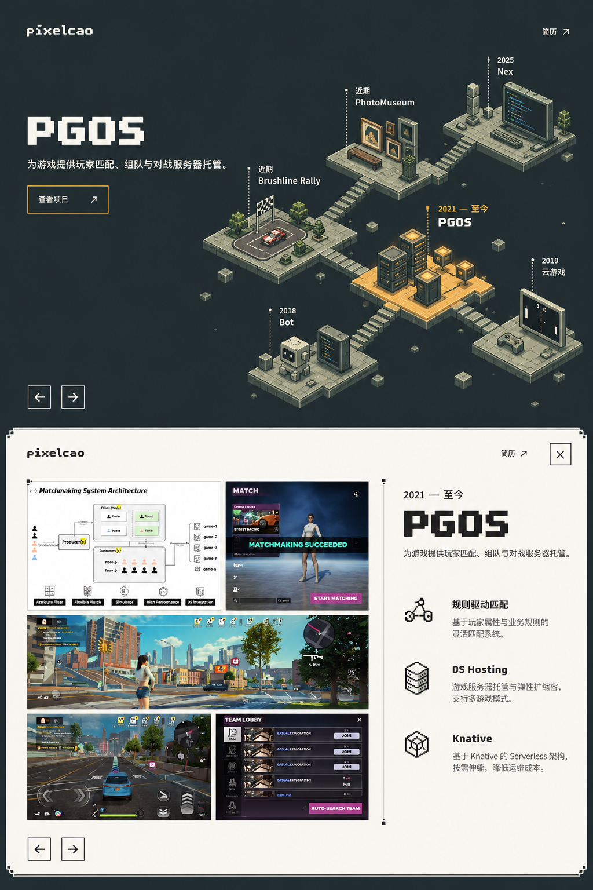

A · 哑光纸景保留展厅感。卡片像厚纸印刷品，边缘轻薄，只有柔和接触阴影；像素只用于字标、年份和少量方形标记。交互：固定视角平移展架，选中纸卡轻抬，再平滑铺展为详情。避免镜面闪动和夸张旋转。适合继续沿用原来的展厅叙事；像素味最轻。
B · 平面像素档案优先推荐用于求职展示。正面大图、清晰排版与方形时间刻度构成界面，不再出现侧面厚度、反光或仿真材质。交互：封面沿横向时间轴滑动；打开时原图在二维空间中扩大并进入详情，文字随后出现。保留单图大图、多图瀑布流和视频自动播放。阅读最直接，也最容易把动效控制得自然。
C · 像素微缩展馆个人辨识度最强。导航本身成为一幅完整像素插画：赛车、照片墙、代码台、服务器分别代表项目。所有体积都采用一致的像素网格和分色阴影。交互：沿时间路径移动视点，选中展台局部亮起；打开详情时展台退后，清晰的作品阅读层展开。原始截图只出现在阅读层，不作为巨型三维玻璃板。需要为项目制作一致的像素展品，插画与动效成本最高。